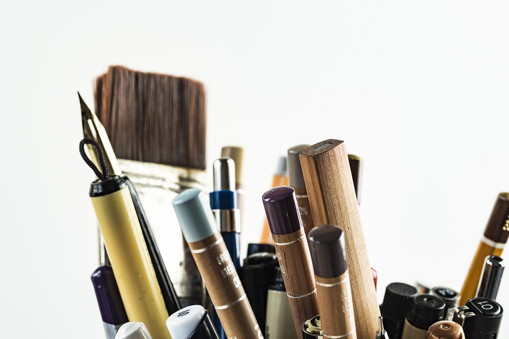

TSMC, 중국산 희토류 대체 장비 공급망 구축 나서

Tom's Hardware가 2026년 10월 보도한 바에 따르면, 세계 최대 파운드리 기업 TSMC가 반도체 제조 장비에 탑재된 중국산 희토류 자석 모터를 대체 제품으로 교체하기 위해 장비 공급업체들에게 대안 모터 제공을 요청했다. 중국의 희토류 수출통제가 팹 운영 리스크로 직결된 데 따른 조치다.
중국은 2026년 하반기 들어 네오디뮴(Nd)·프라세오디뮴(Pr) 등 희토류 수출 허가제를 강화하면서 반도체·방산·청정에너지 등 첨단산업에 광범위한 공급망 압박을 가하고 있다. 수출 유예 조치는 11월 10일 종료될 예정이어서 업계 긴장이 고조된 상태다.
TSMC가 대체를 검토하는 희토류 자석은 주로 영구자석 모터에 쓰이는 네오디뮴철붕소(NdFeB) 자석이다. 이 자석은 반도체 장비의 웨이퍼 핸들링 로봇, 진공 펌프, 이온 주입기 등 다수 핵심 모듈에 사용된다.
TSMC는 공급업체들에게 중국산 희토류를 함유하지 않는 모터 또는 대체 구동 솔루션을 제시해 줄 것을 요청한 것으로 알려졌다. 이는 단순한 소재 다변화를 넘어 장비 부품 단위의 공급망 재설계를 의미한다.
이 문제는 TSMC만의 과제가 아니다. 삼성전자·SK하이닉스·인텔 등 글로벌 팹 운영사 모두 유사한 리스크에 노출돼 있다. 반도체 제조 장비의 모터류는 교체 주기가 길고 인증 절차가 복잡해 대체 공급망 구축에는 상당한 시간이 소요된다.
희토류 자석의 비중국산 대안으로는 일본 TDK·신에쓰화학, 독일 바쿠마그 등이 거론된다. 그러나 이들의 생산 용량이 중국산 물량을 단기에 대체하기에는 부족하다는 지적이 나온다. 중국은 전 세계 희토류 자석 생산의 90% 이상을 점유하고 있다.
국내 반도체 장비 기업들도 이 문제에서 자유롭지 않다. 국내 장비사들이 납품하는 세정·증착·식각 장비에도 NdFeB 자석이 광범위하게 쓰이며, 고객사인 삼성·SK로부터 탈중국 소재 적용 요구가 강화될 가능성이 있다.
포스코그룹 뉴스룸이 2026년 10월 공개한 분석에 따르면, 중국의 핵심광물 수출통제에 대응하는 주요국 전략은 ▲국내 광산 개발 ▲동맹국 간 공동 비축 ▲재활용 확대 ▲소재 대체 기술 개발의 네 축으로 수렴되고 있다.
SMM(상하이메탈마켓)의 2026년 10월 주간 희토류 시황 보고에 따르면, 중국 역외 시장의 프라세오디뮴-네오디뮴(Pr-Nd) 합금 가격은 이번 주 보합세를 유지했다. 수출 유예 종료 전 관망심리가 지속되는 양상이다.
캐나다 희토류 개발사 아클라라 리소시스(Aclara Resources)의 사례처럼, SMM이 보도한 비중국권 희토류 개발 프로젝트들이 주목받고 있다. 그러나 신규 광산이 상업 생산에 도달하기까지는 통상 7~10년이 소요돼 단기 공급 공백을 메우기 어렵다.
TSMC의 이번 공급망 재편 시도는 희토류 탈중국화가 단순한 정책 구호에서 팹 운영의 실질 과제로 전환됐음을 보여주는 사례다. 소재·부품 기업들은 희토류 비함유 솔루션 개발을 중장기 경쟁력의 핵심 과제로 삼아야 할 시점이다.